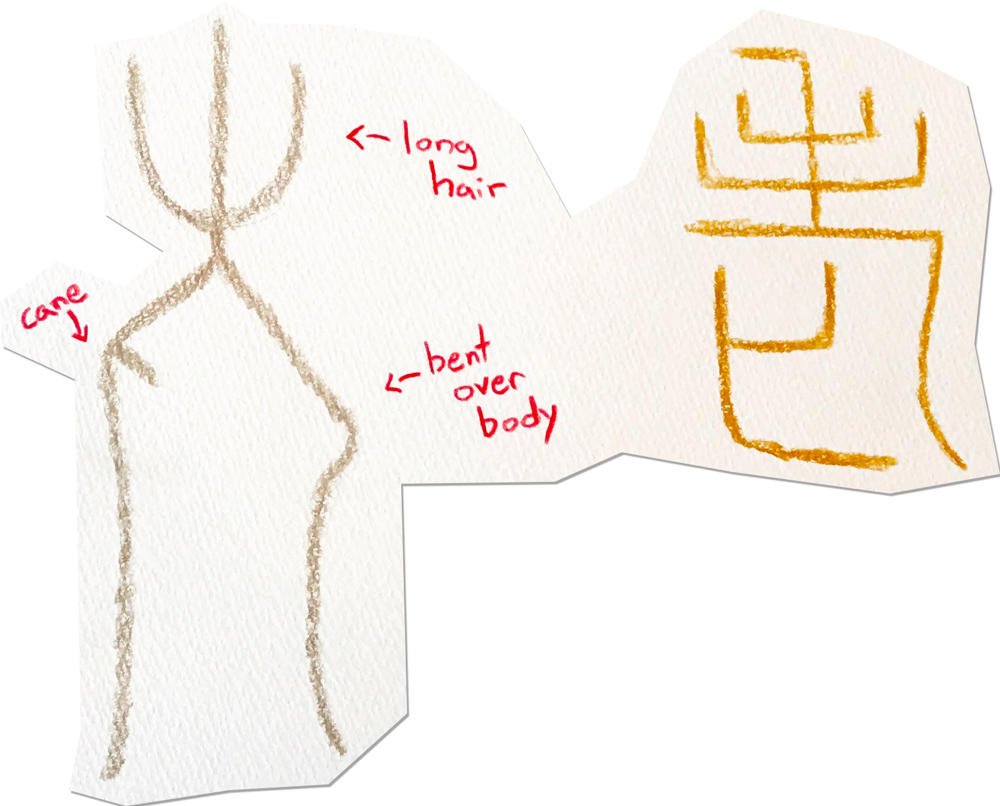

What is considered "old age" has drastically shifted since ancient times, and some of our best music is still put out by elderly folk who have traded in their walking sticks for microphone stands.

The bone script shows an old man with long hair
supported by a cane. In seal script, this became ヒ, which some theories say is a dead body (like in death→死), as old people are "approching death."